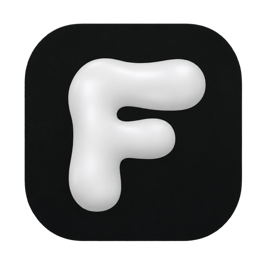
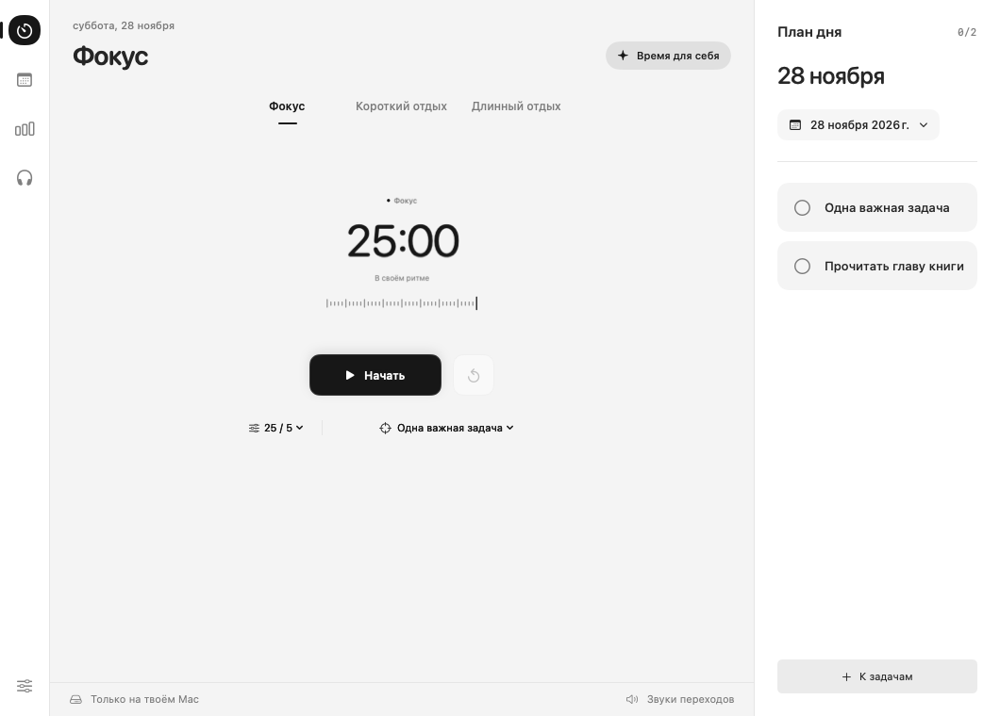

Ритм, который подходит тебе
25/5, 50/10, 90/10 или свои сохранённые интервалы. Работа и отдых чередуются автоматически, переходы звучат по-разному.

FOCUSELLE Скачать для MacНе нужно успевать всё.
Выбери одно важное дело.
И дай ему своё внимание.
Меньше переключений.
Больше присутствия.
Открой проект. Закрой лишнюю вкладку.
Остальное Focuselle возьмёт на себя: отсчитает время, напомнит об отдыхе и вернёт к работе.
Нативное приложение на SwiftUI.
Три стиля: Classic, Olive и Midnight.
Кольцо, шкала или минимальный таймер.

25/5, 50/10, 90/10 или свои сохранённые интервалы. Работа и отдых чередуются автоматически, переходы звучат по-разному.
Планируй день в календаре. Добавляй описания и выбирай одну задачу для текущей сессии.
Время фокуса, график за 7 или 30 дней и распределение по задачам. Без баллов за продуктивность.
Без регистрации.
Без обязательств.
Твои задачи остаются на твоём Mac.
Мини-таймер поверх окон.
Пауза во время сна Mac.
Продолжение, когда ты готов.
Эта сборка — для Mac с Apple Silicon (M1 и новее) и macOS 14 или новее. Сборки для Intel пока нет.
Да. Текущую версию можно использовать бесплатно. Исходный код открыт на GitHub.
Нет. Таймер, задачи, календарь и статистика работают локально. Данные сохраняются на Mac.
Открой .dmg и перенеси Focuselle в папку Applications. Это ранняя сборка с локальной подписью, без нотариального заверения Apple: macOS может не разрешить запуск загруженной копии. Подписанный публичный релиз ещё готовится.
Таймер продолжит работать в строке меню. Во время сна Mac он ставится на паузу. После перезапуска приложения сохранённый интервал можно продолжить вручную.
Один спокойный интервал.
Уже хорошее начало.
Ранняя сборка без нотариального заверения Apple. Подробнее об установке.